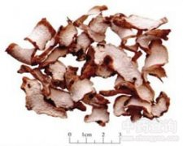

绵萆薢

拼音
Mián Bì Xiè
别名
大萆薢、萆薢
来源
本品为薯蓣科植物绵萆薢Dioscorea septemloba Thunb.或福州薯蓣Dioscorea futschauensis Uline ex R. kunth 的干燥根茎。秋、冬二季采挖，除去须根，洗净，切片，晒干。
生境分布
生于山地疏林或灌丛中。主产浙江、福建、江西。
药材特点
多年生缠绕草质藤本。茎左旋，圆柱形。单叶互生，叶形变异较大，有时一株从基部至顶部全为三角状心形，全缘或微波状，上面被白色粗毛，有时基部为掌状心形，边缘5～9深裂，中裂或浅裂，至顶部为三角状心形，不裂，叶脉多数和为9，叶干后不变黑。雄花序为圆锥花序，雌花序为下垂圆锥花序。蒴果宽倒卵形，翅长1.3～1.5cm，宽2～2.5cm，干后棕褐色。花期6～8月，果期7～10月。
性状
本品为不规则的斜切片，边缘不整齐，大小不一，厚2～5mm。外皮黄棕色至黄褐色，有稀疏的须根残基，呈圆锥状凸起。切面灰白色至浅灰棕色，黄棕色点状维管束散在。质疏松，略呈海绵状。气微，味微苦。
性味
苦，平。
功能主治
利湿去浊，祛风通痹。用于淋病白浊，白带过多，湿热疮毒，腰膝痹痛。
用法用量
9～15g。
化学成分
含薯蓣皂甙（dioscin）、纤细薯蓣皂甙（gracillin），另含有原薯蓣皂甙（protodioscin）、原纤细薯蓣皂甙（protogracillin, kikubasaponin）及甲基原纤细薯蓣皂甙。
药理作用
1：无药理作用数据
摘录
《中国药典》